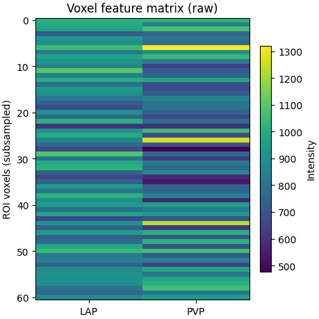
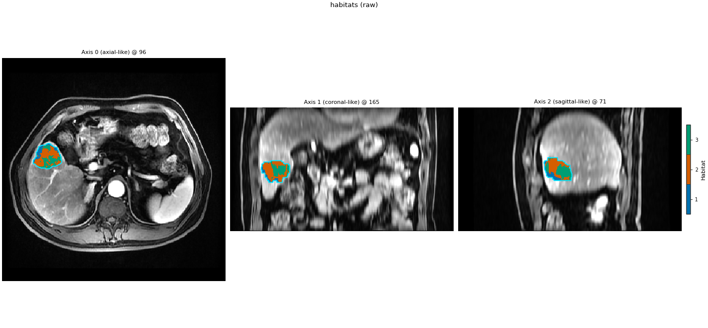

Note
Go to the end to download the full example code.
Voxel features
Background. The extract stage decides which numbers describe each
voxel; habitats can only separate what those columns show. The simplest
choice is the image intensities themselves.
Purpose. You see the voxel-feature table and matrix that clustering
receives with raw, a habitat overlay fitted on it, and how
concat joins two extractors into one wider table.
Key terms.
voxel feature / extract – see Habitats from a single sequence.
raw – one column per listed modality, the intensities unchanged.
concat – runs several extractors on the same ROI voxels and joins their columns side by side.
Clustering uses the voxel field you define — not a fixed T1 image.
This page is the intensity pair: raw (concatenate modality intensities
inside the ROI) and concat (join families column-wise).
Custom formulas and plugins live on the next page. Texture maps follow
that. This page is only raw vs concat.
Load two demo subjects. raw concatenates LAP and PVP intensities
inside the ROI.
from pathlib import Path
import matplotlib.pyplot as plt
from habit.contracts import cohort_from_directory
from habit.datasets import fetch_demo
from habit.execution import backend_from_policy
from habit.pipeline.assembly import build_habitat_components
from habit.spec import HabitatSpec, Spec
from habit.spec.policy import RunPolicy
from habit.viz import plot_habitat_overlay
import habit.recipes as recipes
DATA = fetch_demo()
MODALITIES = ("LAP", "PVP")
ROI = "LAP"
cohort = cohort_from_directory(DATA, modalities=MODALITIES, roi=ROI)[:2]
subject = cohort[0]
print(f"Cohort: {len(cohort)} subjects -> {list(cohort.subject_ids)}")
HABIT demo data (cached)
DATA (preprocessed root): C:\Users\dongm\.habit_data\demo-data-v1\preprocessed
On-disk inventory of this folder:
subjects (5): subj001, subj002, subj003, subj004, subj005
image series: LAP, PVP, delay_3min, pre_contrast
mask keys: LAP, PVP, delay_3min, pre_contrast
example image: images/subj001/delay_3min/WATER__BH_Ax_LAVA_Flex_3min_Series0012.nrrd
example mask: masks/subj001/delay_3min/WATER__BH_Ax_LAVA_Flex_10min_Series0017_mask.nrrd
Your own data must use the same folder tree (change IDs / series names):
DATA/
images/<subject_id>/<modality>/<one image file>
masks/<subject_id>/<roi>/<one mask file>
Then load it with the same call the demos use:
cohort = cohort_from_directory(DATA, modalities=("LAP",), roi="LAP")
Swap DATA / modalities / roi to match your tree. Mask key is often the
same as one image series (here LAP).
Cohort: 2 subjects -> ['subj001', 'subj002']
raw(modalities): one column per series. Print the first voxel rows
so you can see the intensities clustering will use (before any
feature preprocessor).
raw_spec = HabitatSpec(
name="route_raw",
# extract: one column per series. Named fields are the same components
# a Stage list would declare; the complete analysis writes them as stages.
voxel_feature_extractor=Spec("raw", {"modalities": list(MODALITIES)}),
# partition: few supervoxels, only so this page can show a map.
supervoxelizer=Spec("kmeans", {"n_supervoxels": 8, "n_init": 3}),
habitat_model_fitter=Spec(
"kmeans",
{"min_habitats": 2, "max_habitats": 3, "validation": "elbow", "n_init": 3},
),
habitat_assigner=Spec("nearest_centroid"),
habitat_features=(Spec("volume"), Spec("msi"), Spec("ith_score")),
random_seed=11,
)
# Build the components the spec names and call only the extractor on one
# subject, to look at the table before any clustering runs.
raw_field = (
build_habitat_components(raw_spec)
.pipeline(assigner=None)
.voxel_feature_extractor(subject)
)
print("raw feature table:")
print(raw_field.feature_frame().head())
raw_field.feature_frame().head()
F:\work\habit_project\examples\guide\02_features\plot_04_combining_features.py:56: HabitDeprecationWarning: HabitatSpec named-field constructor is deprecated since version 2.0.0 and will be removed in version 4.0.0. Use HabitatSpec(..., stages=(Stage(...), ...)) instead. Named-field YAML / from_dict payloads still load and keep their historical fingerprints.
raw_spec = HabitatSpec(
raw feature table:
LAP PVP
0 1020.0 1030.0
1 1018.0 1068.0
2 1077.0 1088.0
3 1073.0 1072.0
4 1033.0 1132.0
The matrix clustering sees: one row per ROI voxel, one column per modality (rows subsampled so the heatmap stays legible).
frame = raw_field.feature_frame()
row_step = max(1, len(frame) // 60)
sample = frame.iloc[::row_step]
fig_matrix, ax_matrix = plt.subplots(figsize=(4.6, 4.6), constrained_layout=True)
im = ax_matrix.imshow(sample.to_numpy(dtype=float), aspect="auto", cmap="viridis")
ax_matrix.set_xticks(range(len(sample.columns)))
ax_matrix.set_xticklabels([str(column) for column in sample.columns])
ax_matrix.set_ylabel("ROI voxels (subsampled)")
ax_matrix.set_title("Voxel feature matrix (raw)")
fig_matrix.colorbar(im, ax=ax_matrix, shrink=0.8, label="Intensity")
Path("out").mkdir(exist_ok=True)
fig_matrix.savefig("out/habitat_feature_routes_matrix.png", dpi=150, bbox_inches="tight")
plt.show()

Fit the raw route and overlay habitats.
fit_predict runs every stage of the spec on both subjects: partition,
pooled fit (elbow over 2..3 habitats), assign, then the feature stages.
raw_result = recipes.Study(spec=raw_spec).fit_predict(
cohort,
backend=backend_from_policy(
RunPolicy(backend="serial", on_subject_failure="continue")
),
)
print(raw_result.habitat_model.summary())
fig = plot_habitat_overlay(
subject.image(MODALITIES[0]),
raw_result.habitat_maps[0],
title="habitats (raw)",
)
Path("out").mkdir(exist_ok=True)
fig.savefig("out/habitat_feature_routes_overlay.png", dpi=150, bbox_inches="tight")
plt.show()

Cohort.map[_ComputeUnits]: 0%| | 0/2 [00:00<?, ?it/s]
Cohort.map[_ComputeUnits]: 50%|█████ | 1/2 [00:01<00:01, 1.34s/it]
Cohort.map[_ComputeUnits]: 100%|██████████| 2/2 [00:02<00:00, 1.27s/it]
Cohort.map[_ComputeUnits]: 100%|██████████| 2/2 [00:02<00:00, 1.27s/it]
Cohort.map[_AssignPrecomputedUnits]: 0%| | 0/2 [00:00<?, ?it/s]
Cohort.map[_AssignPrecomputedUnits]: 50%|█████ | 1/2 [00:00<00:00, 1.54it/s]
Cohort.map[_AssignPrecomputedUnits]: 100%|██████████| 2/2 [00:01<00:00, 1.56it/s]
Cohort.map[_AssignPrecomputedUnits]: 100%|██████████| 2/2 [00:01<00:00, 1.56it/s]
HabitatModel kmeans-eb51fe90351b084b
habitats : 3
features (2) : LAP, PVP
defining cohort : n=2
modalities : LAP, PVP
cohort digest : cc1b16a34cc7478d...
produced by : habitat_model_fitter.kmeans
habit version : 3.0.0
random seed : 11
preprocessing state: inertia, selection_report, validation
F:\work\habit_project\habit\viz\habitat_overlay.py:806: UserWarning: Display geometry conflict: image/anatomy direction does not match mask/label direction. Using the mask/label direction so coronal/sagittal superior-up follows the labelled anatomy. Pass direction= to override.
resolved_direction, resolved_spacing = resolve_display_geometry(
concat joins two raw extractors column-wise. The head() table
should show the same number of rows and more columns.
m0, m1 = MODALITIES
concat_spec = HabitatSpec(
name="route_concat",
voxel_feature_extractor=Spec(
"concat",
{
"extractors": [
{"name": "raw", "params": {"modalities": [m0]}},
{"name": "raw", "params": {"modalities": [m1]}},
],
},
),
supervoxelizer=Spec("kmeans", {"n_supervoxels": 8, "n_init": 3}),
habitat_model_fitter=Spec(
"kmeans",
{"min_habitats": 2, "max_habitats": 3, "validation": "elbow", "n_init": 3},
),
habitat_assigner=Spec("nearest_centroid"),
habitat_features=(Spec("volume"), Spec("msi"), Spec("ith_score")),
random_seed=11,
)
concat_field = (
build_habitat_components(concat_spec)
.pipeline(assigner=None)
.voxel_feature_extractor(subject)
)
print("concat feature table:")
print(concat_field.feature_frame().head())
concat_field.feature_frame().head()
concat_result = recipes.Study(spec=concat_spec).fit_predict(
cohort,
backend=backend_from_policy(
RunPolicy(backend="serial", on_subject_failure="continue")
),
)
print(f"concat habitats: {concat_result.habitat_model.n_habitats}")
F:\work\habit_project\examples\guide\02_features\plot_04_combining_features.py:123: HabitDeprecationWarning: HabitatSpec named-field constructor is deprecated since version 2.0.0 and will be removed in version 4.0.0. Use HabitatSpec(..., stages=(Stage(...), ...)) instead. Named-field YAML / from_dict payloads still load and keep their historical fingerprints.
concat_spec = HabitatSpec(
concat feature table:
LAP PVP
0 1020.0 1030.0
1 1018.0 1068.0
2 1077.0 1088.0
3 1073.0 1072.0
4 1033.0 1132.0
Cohort.map[_ComputeUnits]: 0%| | 0/2 [00:00<?, ?it/s]
Cohort.map[_ComputeUnits]: 50%|█████ | 1/2 [00:01<00:01, 1.50s/it]
Cohort.map[_ComputeUnits]: 100%|██████████| 2/2 [00:03<00:00, 1.51s/it]
Cohort.map[_ComputeUnits]: 100%|██████████| 2/2 [00:03<00:00, 1.51s/it]
Cohort.map[_AssignPrecomputedUnits]: 0%| | 0/2 [00:00<?, ?it/s]
Cohort.map[_AssignPrecomputedUnits]: 50%|█████ | 1/2 [00:00<00:00, 1.45it/s]
Cohort.map[_AssignPrecomputedUnits]: 100%|██████████| 2/2 [00:01<00:00, 1.44it/s]
Cohort.map[_AssignPrecomputedUnits]: 100%|██████████| 2/2 [00:01<00:00, 1.44it/s]
concat habitats: 3
Total running time of the script: (0 minutes 14.288 seconds)